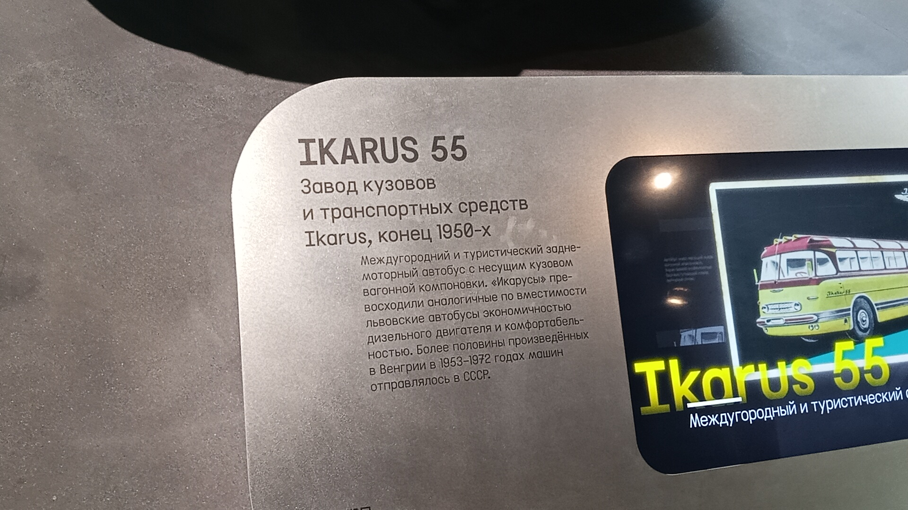

Ikarus 55
Ikarus 55 — венгерский междугородный высокопольный автобус, выпускавшийся фирмой Ikarus с 1953 по 1972 год. Первый заднемоторный Ikarus и самый узнаваемый междугородный автобус СССР.
За вытянутую аэродинамичную форму получил прозвище «Сигара». В Советский Союз отправилась половина всего выпуска — почти 3 800 машин. Последние «Икарусы-55» ушли с междугородных трасс только в начале 1980-х годов.
Общая информация
🏭 Производство
Завод-изготовитель: Национальное предприятие «Икарус», Будапешт (Венгрия)
Годы выпуска: 1953–1972
Всего выпущено: 7 466 экземпляров
Заводы: Матьяшфёльд (до 1960), Секешфехервар (после 1960)
📍 Эксплуатация
Основной покупатель: СССР (почти 3 800 машин)
Другие покупатели: ГДР, Венгрия
В СССР: эксплуатировались до начала 1980-х
Дебют: 1954 год, выставки в Женеве и Париже
⭐ Легенда СССР: В Советском Союзе на момент появления «Икарус-55» просто отсутствовали серийные автобусы для междугородных поездок. На дальних маршрутах обычно использовали городские ЗИС-155. «Икарус-55» пришёл на смену этим машинам и стал основным междугородным автобусом страны на долгие годы. Советские транспортники ценили его за экономичный дизель, комфортную подвеску и удобное место водителя с пневмоусилителем руля.
Технические характеристики
Основные параметры
Длина: 11,4 м
Ширина: 2,5 м
Высота: 2,87 м
Снаряжённая масса: 9500 кг
Максимальная скорость: 98 км/ч
Расход топлива: около 30 л/100 км
Силовая установка
Двигатель: Csepel D-614, дизельный
Объём: 8,28 л
Цилиндры: 6, рядный
Мощность: 145 л.с.
КПП: 5-ступенчатая механическая
Расположение: заднее, в корме
История
Рождение «Сигары»
В начале 1950-х годов фирма Ikarus приступила к разработке принципиально нового междугородного автобуса. Главной проблемой был шумный дизель — чтобы изолировать его от пассажиров, конструкторы разместили двигатель в корме. Так родился Ikarus 55 — первый заднемоторный автобус фирмы с несущим кузовом вагонного типа. Автором обтекаемой формы стал дизайнер П. Хорват Дьёрдь, а новаторские конструктивные решения предложил Зерковиц Бела.
Триумфальный дебют
Дебют «Икарус-55» прошёл с большим успехом на автомобильных выставках в Женеве и Париже. Почти сразу после этого началось серийное производство и экспортные поставки. Автобус привлёк внимание новаторской конструкцией: несущий кузов, заднее расположение двигателя, аэродинамичный профиль.
Первые поставки в СССР
В 1955 году в Советский Союз пришли первые «Икарус-55». Они сразу завоевали популярность: в стране остро не хватало междугородных автобусов, а венгерская машина с экономичным дизелем, комфортной подвеской и удобным местом водителя оказалась именно тем, что нужно. В СССР обычно поставлялась версия «Люкс» с регулируемыми креслами и застеклёнными скатами крыши. Характерной приметой «Икарусов» для советского рынка стала мощная фара-прожектор по центру крыши.
Обновление внешности
До 1958 года «Икарус-55» характеризовались фарами в бампере и обилием блестящей наружной отделки. С 1958 года излишества упразднили, и автобус приобрёл свой классический облик. С 1962 года по просьбам заказчиков входную дверь салона перенесли из середины кузова в передний свес. Однако в зависимости от пожеланий покупателя расположение дверей могло варьироваться: например, «55-е» для ГДР оснащали и центральной, и передней дверями.
Переезд производства
До 1960 года производство велось в Матьяшфёльде, затем было перенесено в Секешфехервар. Это было связано с расширением выпуска и необходимостью увеличения объёмов поставок в социалистические страны.
Конец выпуска
В 1972 году выпуск «Икарус-55» был завершён. Однако наибольшее количество «55-х» было ввезено в СССР именно в этот последний год, уже когда в страну вовсю поставлялись междугородные «Икарус-250» нового поколения. Советские транспортники обеспечили себе запас полюбившихся машин на долгие годы.
Прощание с легендой
Последние «Икарус-55» ушли с междугородных трасс СССР только в начале 1980-х годов. К тому моменту они проработали почти три десятилетия и стали символом целой эпохи в истории советского междугородного транспорта.
Интересный факт: Ikarus Lux — комфортабельная версия «55-го» с 31 пассажирским сиденьем плюс одно для сопровождающего. На версии Lux двигатель форсировали до 170 л.с. За характерный аэродинамический профиль автобус получил прозвище «Ракета», а за шумный двигатель — «Пылесос». Экземпляр из коллекции Музея транспорта Москвы приехал из Германии: в 1990-е годы он был передан в Москву как гуманитарная помощь и использовался как транспорт для инвалидов.
Особенности конструкции
Заднемоторная компоновка
Главная особенность «Икарус-55» — двигатель в корме, изолированный от пассажирского салона. Это решение было принято из-за шумного дизеля. На ходу выхлопные газы не проникали в салон, а звук оставался позади.
Несущий кузов
Вагонный тип кузова без отдельной рамы. Для своего времени это было нестандартное решение, хотя советские ЗИС-127 уже были такими. Вдохновением для венгерских конструкторов послужил советский ЗИС-154, запущенный в серию чуть раньше.
Аэродинамичный дизайн
Вытянутая форма с обтекаемым профилем, за которую автобус получил прозвище «Сигара». Гребень на крыше — это воздухозаборник, а нагретый поток выводился через горизонтальные прорези в корме. Линии стремительные, позади — огромная корма с двигателем.
Комфорт для пассажиров
Версия «Люкс» для СССР оснащалась креслами с регулировкой наклона спинки, застеклёнными скатами крыши, хорошей вентиляцией (люки вместо кондиционеров), мягкой подвеской. В салоне — 31 сиденье плюс место для кондуктора или экскурсовода.
🎉 Символ эпохи: Ikarus 55 — один из самых узнаваемых междугородных автобусов СССР. Его можно было встретить на автовокзалах Москвы, Ленинграда, Риги, Таллина и других крупных городов. За надёжность автобус проходил без капремонта более миллиона километров. Многие водители вспоминают его с ностальгией.
Фотогалерея

📸 pfandrom

📸 pfandrom
Нажмите на фото для увеличения
«У нас на тесте модель, которую многие называют самым красивым автобусом времен СССР — "Икарус-55". За вытянутую форму он еще получил прозвище "сигара"».